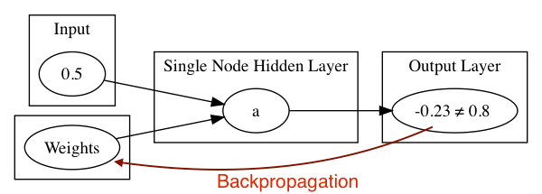

Simplest Neural Net Introduction
Simplest Neural Network
- Simplest Network Demo
- Simplest Network Details
- Important Network Settings
- VGG-16 Demo
- ⇒Simplest Network Demo
- Simplest Network Details
- Important Network Settings
- VGG-16 Demo
Simplest Network Demo
- The Instructor will demonstrate a simple Network
- The Simple Network demo is also available as a Lab you can follow along
- Simplest Network Demo
- ⇒Simplest Network Details
- Important Network Settings
- VGG-16 Demo
Simplest Network
The Goal: Input=0.5 Output=0.8

The Design:
- Apply Random weights, plus activation function per neuron => output

- Test output: does -0.23 = 0.8 ?
Calculate error
* backpropagate to adjust weights
* repeat

How is input handled ?
Input to a Neural Network is always Numeric. Typically a MultiDimensional Array, in this case.. not so many dimensions.
INDArray input = Nd4j.create(new float[]{(float) 0.5},new int[]{1,1});
Create a 1*1 INDArray with the value 0.5
How is output Generated ?
- The activation function combined with the number of neurons in output layer determine the output
Simplest Network Output Layer
.layer(1, new OutputLayer.Builder(LossFunctions.LossFunction.MSE)
.activation(Activation.IDENTITY)
.nIn(nHidden).nOut(1).build())
Output Layer Explained
- Activation Function Identity
- Emits what it recieves
- LossFunction
- How error is calculated
The Output Layer of a Neural Network can be configured for different purposes.
- One of x possible classes
- True/False
- Range of Values
- and more
- Simplest Network Demo
- Simplest Network Details
- ⇒Important Network Settings
- VGG-16 Demo
Settings important to all Neural Networks
- Learning Rate
- Applies to whole Network
- If output is 10 and expected output is 1 how big of a step to take to correnct error
- Activation Function
- Set per layer
- Sets the "trigger" on what output to emit
- examples, sigmoid, ReLU, tanh
- More on these later
- Loss Function
- Set on Output Layer
- How error is calculated
- Example Mean Squared Error
Updater
- Applies to whole Network
- How weights are updated
- example Stochastic Gradient Descent
Simplest Network Setting
- learningRate 0.005
- updater Nesterovs variant of Stochastic Gradient Descent with Momentum
- Output Activation Identity
- Hidden Layer Activation TANH
- Number of Epochs 500
Extrapolate from Simple Network
- Simplest Network took one value in and one value out and trained the network to learn the correct value.
- More complex data same process
- Input can be images, row data, documents
- Output can be T/F, range of values, labels of a class
- Simplest Network Demo
- Simplest Network Details
- Important Network Settings
- ⇒VGG-16 Demo
VGG-16 Demo
- The Instructor will demonstrate a more complex Neural Network
Questions
- Learning Rate ?